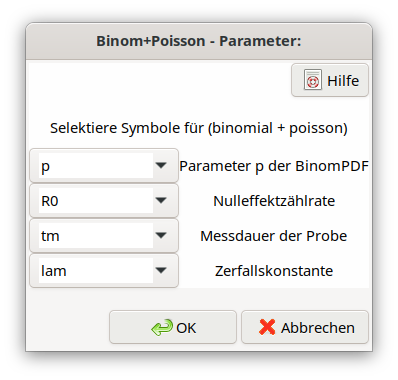

4.10. Messung eines kurzlebigen Radionuklids mit vergleichsweise langer Messdauer¶
4.10.1. Grundlagen¶
Wird bei der Messung der Aktivität eines Nuklids mit kurzer Halbwertszeit das Produkt \(\lambda t_{m}\) deutlich größer als 0,1 oder gar \(\geq 1\), stellt die Poissonverteilung der Bruttozählrate nur noch eine Näherung dar. In diesem Falle tritt die Besonderheit auf, dass die Verteilung der Bruttoimpulsanzahl eine Überlagerung von Binomialverteilung (Probenbeitrag) und Poissonverteilung (Nulleffekt) ist. Charakteristisch für ein Verfahren mit binomialverteilten Impulsen des Probenbeitrags ist, dass die Varianz der Bruttoimpulsanzahl kleiner ist als die Bruttoimpulsanzahl, d.h. kleiner als die Varianz einer rein Poisson-verteilten Bruttoimpulsanzahl ist. Zur Verwendung der Binomialverteilung für die nachgewiesenen Zerfälle unter dieser Randbedingung wird auf Literatur verwiesen (Mathews et al, 1979; Spyrou et al., 1981; Salma and Zemplén-Papp, 1992; Gilmore, 2008; Semkow, 2007).
Es sei \(N\) die Anzahl der zu Beginn der Messung vorhandenen Atome. Das Produkt aus der Wahrscheinlichkeit \(\left( 1 - e^{- \lambda \cdot t_{m}} \right)\) für den Zerfall eines Atoms während der Dauer \(t_{m}\) und der Wahrscheinlichkeit \(\varepsilon\), diesen Zerfall nachzuweisen, bildet einen Parameter \(p = \varepsilon \cdot \left( 1 - e^{- \lambda \cdot t_{m}} \right)\) der Binomialverteilung; \(N\) ist der zweite. \(N\) hängt mit der Aktivität \(A\) über \(A = \lambda \cdot N\) zusammen.
Die Literatur beschränkt sich im Wesentlichen auf die Betrachtung allein der Binomialverteilung des Probenbeitrags. Die Verteilung der Bruttoimpulsanzahl (Probenbeitrag plus Nulleffekt) wird jedoch ebenfalls benötigt. Diese kann durch Faltung zweier diskreter Verteilungen der Binomial- und Poisson-Variablen X und Y hergeleitet werden:
X: |
\(P_{Bi}\left( x|N,p \right) = \binom{N}{x}p^{x}(1 - p)^{N - x}\) |
Y: |
\(P_{Po}\left( y|R_{0},t_{m} \right) = \frac{\left( R_{0}t_{m} \right)^{y}e^{- R_{0}t_{m}}}{\Gamma(y + 1)}\) |
Z = X + Y |
\(P_{BiPo}(X + Y = Z) = \sum_{k = 0}^{z}{P_{Bi}\left( X = k|N,p \right)P_{Po}\left( Y = z - k|R_{0},t_{m} \right)}\) |
Mit \(x \equiv k\), \({y \equiv n}_{0m} = R_{0}t_{m}\) und der Bruttoimpulsanzahl \(n_{g} = z = x + y = k + n_{0m}\) folgt:
Bemerkung
Streng genommen ist die Form der \(P_{BiPo}\)-Verteilung, wie gerade definiert, nur für ganzzahlige Werte des Binomialparameters \(N\) gültig. Für nicht-ganzzahlige Werte ist der Binomialverteilungs-Anteil nicht auf eins normiert. Dieses Problem kann vermieden werden, wenn Gl. (4.10.1) durch eine spezielle numerische Funktion ersetzt wird, die durch eine hypergeometrische Verteilung unter Verwendung der sogenannten Kummer confluent hypergeometric function ausgedrückt wird. Diese Form der Verteilung erlaubt auch nicht-ganzzahlige Werte von \(N\). Ihre Berechnung ist außerdem schneller als die Anwendung von Gl. (4.10.1), besonders für größere Werte von \(N\). Diese Version der \(P_{BiPo}\)-Verteilung wird tatsächlich in UncertRadio angewendet.
Für einen Wert der Bruttoimpulsanzahl, der durch Monte-Carlo-Simulation erzeugt wird, werden ein binomialverteilter Wert (Probenbeitrag) und ein Poisson-verteilter Wert (Untergrundbeitrag) erzeugt. Beide Werte werden zur Bruttoimpulsanzahl addiert. Dabei wird allerdings nur das durch Gl. (4.10.1) gegebene Verfahren befolgt (diskrete \(k\)-Werte), weil der Zufallszahlengenerator der Binomialverteilung nur ganzzahlige Werte erzeugen kann, während die Poisson-Zufallswerte (Untergrundbeitrag) kontinuierlich sind. Für eine kleine Zahl von Bruttoimpulsen ist die Form der Verteilung daher eine Serie überlappender Peaks, einer für jeden ganzzahligen Binomialwert.
4.10.2. Hinweise zu Unsicherheiten und zur Auswertung¶
Erwartungswert und Varianz der Bruttoimpulsanzahl \(n_{g}\) werden wie folgt aus der \(P_{BiPo}\)-Verteilungsdichte berechnet:
Für die Binomialverteilung allein gilt:
so dass in den Gl. (4.10.2) und (4.10.3) das Produkt \(Np\) durch \(k\) ersetzt werden kann.
Setzt man \(k = n_{g} - n_{0m}\), das als Netto-Impulsanzahl zu interpretieren ist, in Gl. (4.10.3) ein, folgt:
Zwei für die Unsicherheitsfortpflanzung wichtige Größen sind die Brutto- und die Nettozählrate. Sie müssen auf direkt gemessene Größen zurückgeführt werden:
Bruttozählrate:
Nettozählrate:
One finds for .. math:: binomialoverset{rightarrow}{}Poisson equiv p rightarrow 0
Zusammenhang zwischen Aktivität und \(\mathbf{N}\)
Für die bei \(t = 0\) vorliegenden Aktivität \(A_{0} = \lambda N\) wird in der Zeitdauer \(t_{m}\) die allein auf den Beitrag des kurzlebigen Radionuklids verursachte Impulsanzahl \(k\) registriert/nachgewiesen. Dafür gilt:
Mit \(R_{s} = k/t_{m}\) folgt:
Eine Gleichung für \(A_{0}\) folgt aus der Gleichung für die Zählrate \(R_{s}\) (\(f_{3}\) ist eine Korrektur für den Zerfall während der Zähldauer)
Aktivitätskonzentration \(\mathbf{a}\):
Für die zu berechnende Aktivitätskonzentration \(a\) wird die Beziehung \(A_{0} = \lambda N\) verwendet:
Auf der Basis dieser Gleichung kann in UncertRadio die Unsicherheit durch Unsicherheitsfortpflanzung berechnet werden.
4.10.3. Ein Beispielfall¶
Es wird radiochemisch abgetrenntes Ac-228 (Halbwertszeit (6,15 \(\pm\) 0,03) h) während der Messdauer von 8 h gemessen. Für diese Messbedingung gilt \(\lambda_{Ac228}t_{m}\) = 0,9017. Da dieses Produkt deutlich oberhalb von 0,1 liegt, fast 1 ist, ist der Ac-228-Beitrag zur gemessenen Bruttoimpulsanzahl als binomialverteilt anzusetzen. Die Bruttoimpulsanzahl folgt also der Summe aus Binomial- und Poisson-verteilter Beiträge.
Verwendete Symbole und Eingangswerte:
(entnommen aus dem UR2-Projekt Ac228_binomial_DE.txp)
\(N\)
|
Number of atoms existing at the begin of measurement
(\(A = \lambda N\))
|
|---|---|
\(p\)
|
\(= \varepsilon\left( 1 - e^{- \lambda t_{m}} \right)\):
parameter of the binomial distribution:
\(Bin\left( x|N,p \right) = \binom{N}{k}p^{k}(1 - p)^{N - k}\)
(\(0 \leq k \leq N\)) (1)
\(p =\)0,23764104; \(u(p) =\) 0,004982491
Note: If the measurement of duration \(t_{m}\)does not
start at 0, but at \(t_{1}\), the parameter \(p\) is
extended to:
\(p = e^{- \lambda t_{1}}\varepsilon\left( 1 - e^{- \lambda t_{m}} \right)\)
|
\(\varepsilon\)
|
detection probability: 0,4 \(\pm\) 0,0083;
|
\(\lambda\)
|
decay constant of Ac-228, half-live t 6,15 h \(\pm\) 0,03 h;
\(\lambda =\)0,1127069 h-1; \(u(\lambda) =\)
5,497896E-04 h-1
|
\(t_{m}\)
|
duration of the Ac-228 measurement (8 h), being not small
compared to the half-live
|
\(R_{0}\)
|
background count rate, measured with the duration
\(t_{0}\)= 20 h: 50 counts/20 h = 2.50 h-1;
|
\(n_{g}\)
|
number of gross counts: 50 counts within 8 h;
|
\(w_{g0}\)
|
factor converting the activity (Bq) into an activity
concentration
|
Aus diesen Daten folgt:
\(n_{0m} = R_{0}t_{m} = 20\) counts
\(k = n_{g} - n_{0m} = 30\) counts
\(N = k/p = 126.2408\) counts
\(R_{s} = 30/8\ h^{- 1} = 3.75\ h^{- 1}\)
\(u(R_{s}) = \sqrt{30 \cdot (1 - 0.23764104)}/8 = 0.5978\ h^{- 1}\ \)
\(u(ng) = \sqrt{n_{g}(1 - p) + n_{0m}p} = \sqrt{50 \cdot (1 - 0.23764104) + 20 \cdot 0.23764104} = 6.5476\)
\(A_{0} = 0.112707 \cdot 126.24 = 14.228\) Bq
weitere Rechnungen dazu:
w = 3.79418826 u(w)= 7.90495202E-02 (w0=1)
a = 14.2282066 u(a)= 3.39566064
Sum(Product(Bi x Po)):
mean(BiPo)= 50.0000000 var(BiPo)= 42.8707695
expected Var: Ng*(1-p) + N0/t0*tm*p= 42.8707695
Anmerkung: Die Varianz der Bruttoimpulsanzahl (42,871) ist kleiner ist als die Bruttoimpulsanzahl (50,0), d.h. kleiner als die Varianz (50,0) einer rein Poisson-verteilten Bruttoimpulsanzahl. Für eine 10mal kleinere Nachweiswahrscheinlichkeit wird \(p\) 10mal kleiner, d.h. \(p = 0.0237641\). Bei dieser Annahme kann die Binomialverteilung in guter Näherung durch eine Poissonverteilung ersetzt werden. Dann würde man näherungsweise „Varianz der Bruttoimpulsanzahl = Bruttoimpulsanzahl” erwarten. Dies wird durch Gl. (4.10.6) bestätigt, nach der der Wert der Varianz \(50 \cdot 0.97624 + 20 \cdot 0.0237641 = 49.287\ \) beträgt, also schon nahezu dem für den „Poisson plus Poisson”-Fall erwartbaren Wert von 50 entspricht.
4.10.4. Implementierung in UncertRadio¶
Der erste Schritt zum Aufruf des speziellen Verfahrens für kurze Halbwertszeiten besteht darin, in dem UR-Projekt im TAB “Values, Uncertainties” für die Variable der Bruttoimpulsanzahl den Typ „Binom+Poiss” der Verteilungsform zu selektieren.
Danach sind 4 weitere Parameter zu selektieren: \(p,\ \ R_{0},\ t_{m}\ and\ \lambda\). Dazu kann über das Menü Bearbeiten – Binomial/Poisson-Fall setzen ein Dialog aufgerufen werden:

Beim Aufbau eines solchen UR-Projekts wird dieser Dialog auch programm-intern aufgerufen.
Die Symbolnummern der vier Parameter p, R0, tm, lambda, werden in der txp-Datei gespeichert, z.B. „BinPoi=8 10 12 9”.